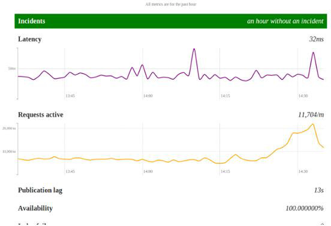
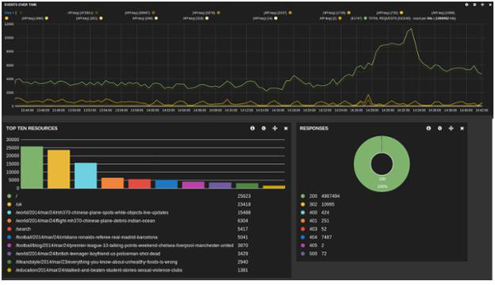

The team I work in at the Guardian has been working on a major rewrite of the Content API so that it scales with our new responsive site. As part of this rewrite, our team has taken ownership of the stack – something that was previously managed by our systems team. For the first time, this has meant the development team has had to think about how we gain confidence that our application is working correctly and how we find out when it isn’t.
Monitoring
Pingdom provides latency of the API endpoints from different locations and gives useful uptime reports over periods of time, helping us to see the impact of our changes.
We use Amazon Web Services and CloudWatch gives us many metrics including request rate, latency and the rate of 2xx, 4xx and 5xx responses, all of which are useful indicators for the Content API. This alone gives the team a good understanding of the system as it exists now, and for up to a month previously. However, only those with access to the AWS account can view this information. Other teams need a view of this information too: if their product relies on the Content API, then knowing if the API is responding as expected is important. The AWS metric data can also be accessed via an API and developer Max Harlow used this to create a public-facing dashboard. This dashboard also brings in one further indicator that the team care about: is new and updated content is being indexed quickly? The dashboard is able to contact an internal monitoring tool to keep track of the time lag between launches of content through to it being available in the Content API.

Public facing dashboard to show if the Content API is working as expected.
The Content API uses Logstash to send logs to an Elasticsearch cluster. We use Kibana to visualise the aggregated logs and monitor important log messages. We can retrospectively look at the logs of terminated instances and analyse what went wrong during an incident. We also use Kibana to get finer detail on the types of the requests and where they are coming from. As we are migrating users from one system to another, it’s been useful to track usage.

Aggregated logs can be visualised in Kibana
Alerting
The dashboards are great but we can’t watch them all the time. We created some alerts to notify us when things aren’t quite right. We base these alerts on KPIs – for example, the API is serving a high number of 5xx responses; latency is over one second for consecutive minutes; five items or more have launched but not been indexed. As we already use CloudWatch and Pingdom, we started out by getting them to send notifications when a KPI threshold had been crossed. It soon became apparent, however, that while we were alerted of the issue, we didn’t know if anyone had started looking into it. We moved to using PagerDuty which integrates well with CloudWatch and Pingdom. PagerDuty allows us to set up an escalation policy with members individually deciding how they want to be alerted. The alert is sent in order of the escalation policy. If a team member feels confident, they can acknowledge the alert, preventing it from escalating to the next person. They can then fix the issue and mark the alert as being resolved, resetting the process. PagerDuty provide a API and we reference the state of the API (everything is okay / not okay) into the dashboard.
How we deal with alerts
Alerts are meant to be dealt with. When bedding in a new system it can take time to figure out if an alert is genuine or perhaps at too low a threshold and the system is fine. If it is too low we raise it, if we don’t get notified appropriately (and it had been spotted externally) we re-evaluate it. Otherwise, the issue requires fixing. If it’s a severe issue we apply a fix ASAP, if it’s something we can work around we’ll do that and prioritise to get it fixed. If we can’t fix the issue, we try self-healing. By this, we mean that the system acknowledges something is not right and attempts to recover itself. For example, one part of the application processes notifications from a queue. If the queue length starts to grow, we know something is not right. We created an alarm if the queue has grown past a certain length. If the alarm is triggered, autoscaling will kick in and launch new instances of this application and start processing the queue, putting the Content API back into a good state. This has been one of my favourite techniques over the past year: it has meant that no-one has needed to intervene out of hours and gives the team time to investigate what the issue is. Finally, it has made us address the quirks in the system which require manual intervention.